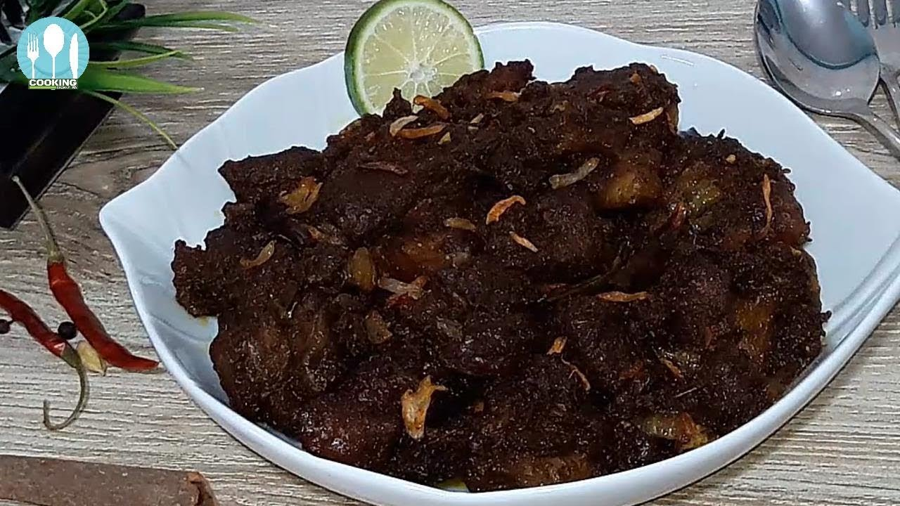

|
Kala bhuna (Bengali: কালা ভুনা, Chittagonian: হালা ভুনো, romanized: Hala bhuno) is a meat curry made of beef or mutton, originated in Chittagong, Bangladesh.[1][3] Different types of spices are needed to prepare this traditional dish of Chittagong. In Bengali, the word kala or kalo means black and bhuna means deep fry. Kala bhuna gets its name from its appearance, as the meat goes blackish during a long process of deep frying it with a plenty of spices. It has become popular also in other Bangladeshi cities like Sylhet,[5] Khulna,[6] Dhaka[7] etc. Nowadays, this dish is also a favorite delicacy in mezbans, weddings, eids and in sehri or iftar during the time of Ramadan. Usually, Kala bhuna is eaten with plain rice, polao, porota, naan or ruti. |

|